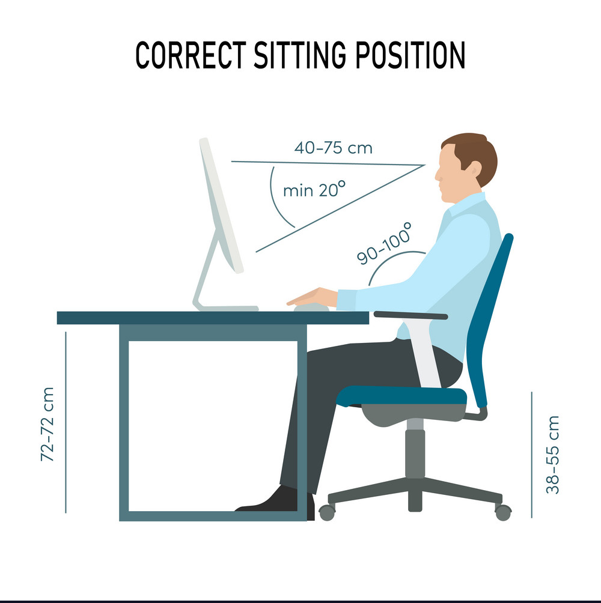
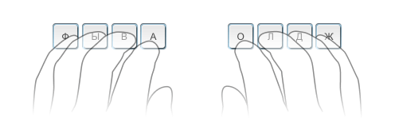
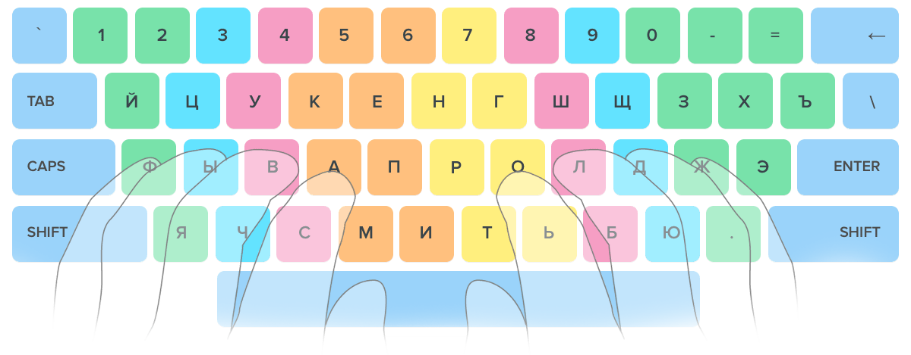

Лучший клавиатурный тренажер
Не теряй времени зря!
Печатай и выбирай фильм для просмотра ОДНОВРЕМЕННО!!!
Как говориться, без теории далеко не уедешь!
Перед тем, как преступить к работе необходимо выучить несколько легких, но обязательных правил
Главная идея слепой печати в том, что за каждым пальцем закреплена своя зона клавиш. Это позволяет печатать не глядя на клавиатуру. Регулярно тренируйся и, благодаря мышечной памяти, все твои десять пальцев будут знать, куда нажать.
1. Поза при печати
- Сиди ровно и держи спину прямой.
- Локти держи согнутыми под прямым углом.
- Голова должна быть немного наклонена вперед.
- Расстояние от глаз до экрана должно быть 45-70 см.
- Расслабь мышцы плеч, рук и кистей.
- Кисти могут немного касаться стола в нижней части клавиатуры, но не переноси
вес тела на руки, чтобы не перенапрягать кисти.

2. Исходная позиция
Немного согни пальцы и положи их на клавиши ФЫВА и ОЛДЖ, которые находятся в среднем ряду. Эта строка называется ОСНОВНОЙ СТРОКОЙ, потому что ты всегда будешь начинать с этих клавиш и возвращаться к ним.
На клавишах А и О, под указательными пальцами, находятся небольшие выступы. Они позволяют ориентироваться на клавиатуре вслепую.
3. Схема клавиатуры
Цвет клавиш на этой клавиатуре поможет тебе понять и запомнить, каким пальцем на какую клавишу нужно нажимать.

- Нажимай клавиши только тем пальцем, который для них предназначен.
- Всегда возвращай пальцы в исходную позицию «ФЫВА – ОЛДЖ».
- Когда набираешь текст, представляй расположение клавиш.
- Установи ритм и соблюдай его, пока печатаешь. Нажимай на клавиши с одинаковым интервалом.
- Клавишу SHIFT всегда нажимает мизинец с противоположной стороны от нужной буквы.
- Пробел отбивай большим пальцем левой или правой руки, как тебе удобнее.
Сначала такой метод печати может показаться неудобным. Но не останавливайся. Со временем все будет получаться быстро, легко и удобно. Чтобы добиться максимального результата, выбирай курс слепой печати для твоей раскладки клавиатуры и на нужном языке.